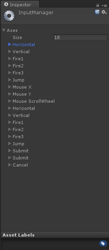
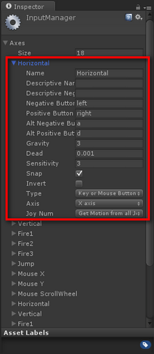
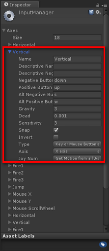
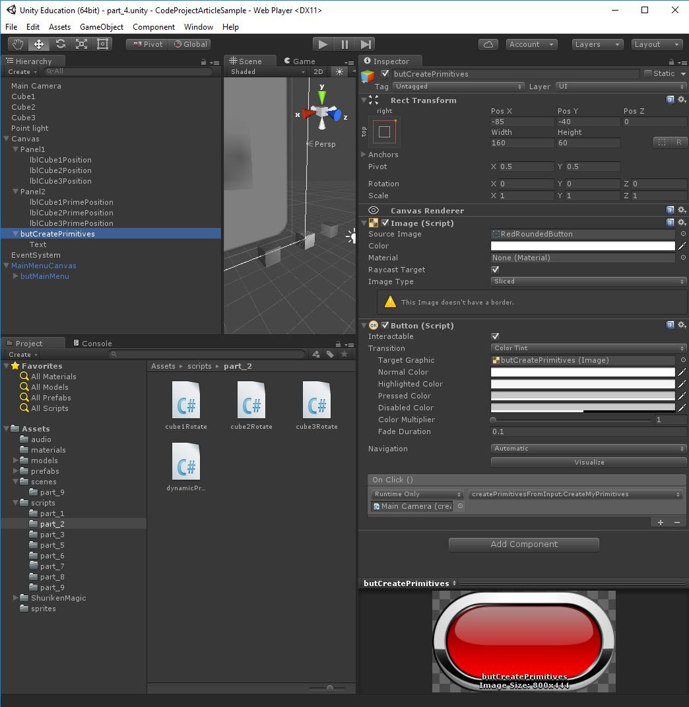
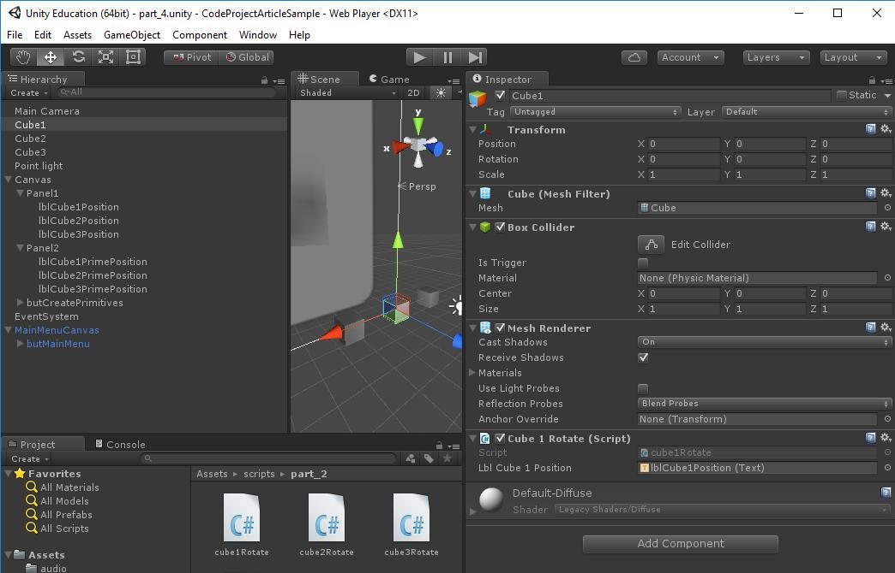
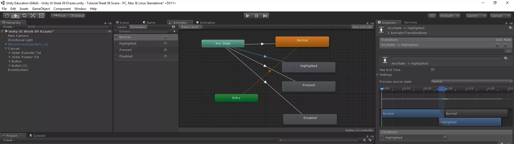

Lecture 07: Unity UI — From Input to Feedback
Learning outcomes
By the end of this lecture, you should be able to:
- Describe how user input, a Canvas and the Event System work together in a Unity UI.
- Connect a uGUI Button to a public method and display live game-state feedback in a HUD.
- Make scripted movement frame-rate independent and check a layout at different screen sizes.
Follow the core sequence: input and events, Canvas layout, text and buttons, then a small HUD practical. Later slides contain optional extensions and examples.
Core and extension pathway
Core:
Understand input and UI events, then build a uGUI HUD.
Optional:
Extend it with spawning, score readouts and animated controls. UI Toolkit appears only as a stretch target on the final slide.
Input: the legacy Input Manager and axes
Inputs, Outputs and the Input Manager
Legacy workflow: this section explains the Input Manager used by the lecture’s existing examples. Unity’s newer Input System package is the recommended path for new projects; the legacy examples remain here so you can understand and run the supplied material.
Unity Input System package manual
Unity Input Manager - Also Tutorial 2-3
- Keyboard
- Mouse
- Joystick(s)
Unity Input Manager – Tut 7.1
- Name: the name of the axis as defines in the Input Manager. This is the name that you can refer to in your C# code for to detect and perform an operation as desired.
- Positive Button: defines the primary button that will provide the positive direction / force.
- Negative Button: defines the primary button that will provide the negative direction / force.
- Alt. Positive Button: same as the positive button, but defines a secondary input intake.
- Alt. Negative Button: same as the negative button, but defines a secondary input intake.
- Type: defines where the input source is coming from; (Keyboard/Mouse/Joystick).
- Axis: which axis in the world should the force be applied to.



Related Tutorials
Input: key controls and frame-rate-independent movement
Keyboard Rotation of Primitives – Tut 7.1
Legacy Input Example
Input.GetKey API to match the supplied project. New Project Recommendation
Input key values to handle the rotation for the dynamically created primitives in the following order:
- Key A will be responsible to rotate Cube1’ on the Y-Axis.
- Key B will be responsible to rotate Cube2’ on the X-Axis.
- Key C will be responsible to rotate Cube3’ on the Z-Axis.
Unity Input Manager/Movement Scripting – Tut 7.1
CreatePrimitivesFromImport.cs – on Main Camera, can access all Cube Game Objects. Define a rotation speed in degrees per second, for example private float rotationSpeed = 90f;.
Noorcon Inc. - Unity 3D Game Programming Part 4 - Vahe Karamian (PDF)
Unity Animator Scripting - Tut 5
- Array, Animate, Export from Max
- New Project, Import
- Divide into Static, Explode, Implode animations
- Set up Animator
- Script for Input
Video: Tutorial 08 01 — Animator scripting walkthrough
UI foundation: uGUI, Canvas and responsive layout
UnityEngine.UI Namespace
UnityEngine.UI Namespace:
- Canvas, RectTransform
- Button, Image, Panel, Text
- Prefabs
- Events, Event Triggers
- Slider
- Transitions
For a responsive screen-space HUD, use RectTransform anchors to keep elements positioned relative to the intended edges or corners. Set the Canvas Scaler to Scale With Screen Size, choose a reference resolution, and test wide, narrow and different-resolution views.
For mobile layouts, also check the device safe area so important controls are not obscured by notches or system bars. Canvas Scaler manual
Canvas – Base component of UI
Canvas – Base component of UI
- Screen Space Overlay – exactly to screen size, nothing rendered in front
- Screen Space Camera – Similar, but affected by camera settings
- (Perspective vs orthographic)
- World Space – makes a 3D world object
- (in game screens)
- Drawn in Hierarchy order
Images, Buttons, Text all children of this
- Dragged into boxes to wire up
Event System
- Event System is responsible for handling input events and routing them to the appropriate UI elements
UI events: Button On Click and the Event System
Event System - Game Object
The Event System routes pointer, touch and navigation input to UI controls. Include an EventSystem in the scene and use an input module that matches the project’s input setup.
- Event System - Game Object
- Allows UI elements to be selected
- Input Modules
- Gamepad and keyboard/mouse
- Touch
- Unity input is a class and a manager
Determine Event Firing for UI
- A uGUI Button’s On Click event runs when the user clicks and releases on the button. You do not need to add separate Pointer Down and Pointer Up components for a normal button click.
- Use an EventTrigger only when you need distinct events such as pointer enter, exit, down, up or drag on a UI object that does not provide the required control event.
Wiring Functions to Events – Tut 7.1b (extra)
- Dragging Game Object in will expose Components and Functions for use
- Inspector-wired methods are commonly public void methods with no parameter or one parameter supported by that UnityEvent.
- Can call on attached scripts as well
- access as component in script or
- drag itself into box
UI controls: text feedback and buttons
Text – most fundamental UI element
Unity provides both the legacy uGUI Text component and TextMeshPro UI text. Existing sample scripts using UnityEngine.UI.Text are retained for continuity; for new uGUI text objects, prefer TextMeshPro.
In a script, add using TMPro; and reference a UI text object with public TextMeshProUGUI scoreLabel;. Assign the TextMeshPro UI object in the Inspector.
Newer Unity Learn reference: Creative Core: UI
Older Lynda video reference (availability may vary): Create a button element
- Text – most fundamental UI element
- display game readouts, dialogue, instructions, menus
- Wired up by dragging UI Text Element into exposed Public Var Box of Script
- Used in conjunction with other element
- pre built into buttons as child
- Creating UI text creates Canvas Parent
- Zero out, adjustments
- Modify at runtime with scripts
Text Readout Tutorial: 7.1
Button – most Common UI element
Newer Unity Learn reference: Creative Core: UI
Older Lynda video reference (availability may vary): Create a button element
- Button – most Common UI element
- Direct Interaction
- Comes with text element
- Can use images
- Creating UI Button creates Canvas Parent
- Zero out, Adjust rect transform
- Transitions provide visual states such as highlighted, pressed and disabled.
- Configure and test Button Navigation so keyboard and gamepad users can move through controls in a clear order.
- Event Handler
- On Click invokes the selected method after a completed click and release
- Modify Text Element of Button at runtime
- Drag Text element into OnClick Box
- Modify Text Object, Script, and string text Property in function to I’m clicked
- Runtime-instantiated objects cannot be assigned as persistent Inspector targets; add their listeners from code when creating them.
Basics
Noorcon Inc. - Unity 3D Game Programming Part 4 - Vahe Karamian (PDF)
HUD Text Readout from Script Public Variable
Noorcon Inc. - Unity 3D Game Programming Part 4 - Vahe Karamian (PDF)
Button OnClick Event Handling (Associated Functions must be public and void)
Noorcon Inc. - Unity 3D Game Programming Part 4 - Vahe Karamian (PDF)
Button Runtime text feedback
Newer Unity Learn reference: Creative Core: UI
Older Lynda video reference (availability may vary): Create a button element
Core practical: build a UI HUD — scene setup
Core practical: Unity UI HUD
Build a small HUD that reports the live position and rotation of three cubes. First prepare the scene and controls; the next slide completes the Button callback and readout script.
Initialize Cubes (with rotation)
Noorcon Inc. - Unity 3D Game Programming Part 2 - Vahe Karamian (PDF)
Initialize more Cubes from Button (4.2)
Button OnClick Event Handling (Associated Functions must be public and void)
Noorcon Inc. - Unity 3D Game Programming Part 4 - Vahe Karamian (PDF)
Animate rotation from key
Button OnClick Event Handling (Associated Functions must be public and void)
Noorcon Inc. - Unity 3D Game Programming Part 3 - Vahe Karamian (PDF)
HUD Text Readouts in Unity UI Text and Panels (from Script Public Variable)
Noorcon Inc. - Unity 3D Game Programming Part 4 - Vahe Karamian (PDF)
Core sequence and optional extensions
Core: create and rotate three cubes, then display their position and rotation in a Canvas HUD.
- Optional extensions:
- 7.1a Initialize (Spawn) Cubes from key
- (with translate control by key)
- 7.1b Button Event Handling (rather than Week 5 – OnClick)
- (Associated Functions must be public and void)
- 7.1c Button Event Handling on Instantiated Cube (both above combined)
- 7.1d Instantiate Prefab
- 7.2 Text Readout Score
- 7.3 Animated Legacy Button
- 7.4 Animated Text Mesh Pro Button
Tutorial 7.1 Unity UI HUD — Scene Setup
- GO Main Camera
- CreatePrimitivesFromInput.cs
- Spawn from space key
- Translate from arrow keys
- Optional extension: spawn prefabs of the cubes with scripts and readouts
- CreatePrimitivesFromInput.cs
- GO UI Canvas
- GO UI Panel
- GO UI Text (legacy Text or TextMeshProUGUI)
- GO UI Panel
- GO Cube x 3
- CubexRotate.cs
- Rotate scripted movement (narrative)
- Private String variable of live rotation data
- Public UI text variable – assign the matching legacy Text or TextMeshProUGUI object in the Inspector
- CubexRotate.cs
Related Tutorial
Core practical: initialize objects and display HUD readouts
Tutorial 7.1 Initialize the cubes from a Button
Noorcon Inc. - Unity 3D Game Programming Part 4 - Vahe Karamian (PDF)
Button (On Click event and public void function)
- Drag the object with the script into the Button's On Click list, then select the public method
- This method runs when the user completes a click on the Button
The following is a method excerpt; the cube fields and PRIMITIVES_CREATED flag are declared elsewhere in the script.

Tutorial 7.1 Display live position and rotation in the HUD
Tutorial 7.1 Unity UI HUD Noorcon Inc. - Unity 3D Game Programming Part 4 - Vahe Karamian (PDF)

Core practical check
- Click the Button once and confirm that the cubes are created only once.
- Confirm that the readout displays position and rotation and updates as the cube rotates.
- Check the Canvas at more than one aspect ratio and confirm key controls can be reached with the intended input device.
- Keep text readable, maintain sufficient contrast and do not rely on colour alone to communicate important state.
Notes
The string uses P for local position and R for local rotation; each axis value is formatted to two decimal places.
Noorcon Inc. - Unity 3D Game Programming Introduction - Vahe Karamian.pdf
Optional extensions: spawning, scoring and animated UI
Tutorial 7.1 Optional: spawning cubes and wiring instantiated objects
7.1a Initialize (Spawn) Cubes from key
(with translate control by key)
7.1b Button Event Handling (rather than Week 5 – OnClick)
(Associated Functions must be public and void)
7.1c Button Event Handling on Instantiated Cube (both above combined)
7.1d Instantiate Prefab
Tutorial 7.2 Optional: add a score readout (legacy Text example)
Extra - Tutorial 7.2 Text Readout Score
This example uses the legacy uGUI Text component. For a new project, use TextMeshProUGUI as described on slide 6.
UI Cookbook chapter 2
1. Make UI/Text – call it “Score Counter”
2. Add Component/Script
3. Create Text “uiText” and “score” variables
4. In Start – uiText = GetComponent<Text>();
5. Add Points (run script when key is pressed - remember how to do this?)
6. Method outside of update
Tutorial 7.3, 7.4 Optional: animate a Button (legacy UI and TextMeshPro examples)
Extra - Tutorial 7.3 Animate UI Button
Extra - Tutorial 7.4 Animate UI Button TextMeshPro
Video: Animate UI Button

Notes
https://www.assetstore.unity3d.com/en/#!/content/25468
Video: Slider – control and display
Video: Layouts and Spaces
Animated Buttons
Next Steps
We can continue with Unity UI with extra features in the next tutorials >>>
Apply and review: menus, navigation and next steps
Unity UI Tutorials General Interface
Older Unity Learn references (availability or redirects may vary)
https://unity3d.com/learn/tutorials/topics/user-interface-ui/ui-canvas?playlist=17111
https://unity3d.com/learn/tutorials/modules/beginner/live-training-archive/the-new-ui?playlist=17111
Unity UI Menu Various (Games)
Readouts
Noorcon Inc. - Unity 3D Game Programming Part 4 - Vahe Karamian (PDF)
Health Bar
Newer Unity Learn reference: Health Bar Tutorial
Noorcon Inc. - Unity 3D Game Programming Part 9 - Vahe Karamian (PDF)
Timer
Noorcon Inc. - Unity 3D Game Programming Part 6 - Vahe Karamian (PDF)
Collection Bar
Noorcon Inc. - Unity 3D Game Programming Part 6 - Vahe Karamian (PDF)
Score/Info
Noorcon Inc. - Unity 3D Game Programming Part 6 - Vahe Karamian (PDF)
Unity UI Menu and Levels
Scene/Level Switching (Scene manager):
Video: Scene/Level Switching (Scene manager)
Video: Scene/Level selection
Unity UI Minimaps
Minimaps
Video: Unity Mini Map tutorial 1
Video: Unity Mini Map tutorial 2
Unity UI Widgets
Player Control
Video: Player Control
Shop UI with ScrollLists
Video: Shop UI with ScrollLists
Review checklist
- Can you explain how input reaches a UI control through the Event System?
- Does each Button invoke the intended method only after a completed click?
- Does the HUD display current game data, remain readable, and fit more than one aspect ratio?
- Can the interface be operated with the intended keyboard, pointer, touch or gamepad controls?
- Have you kept optional features separate from the working core HUD?
Stretch target: explore UI Toolkit
UI Toolkit is a stretch target only; the core lecture and practical use uGUI. Compare the UI Toolkit workflow with this Canvas-based HUD after completing the core practical.
Further resources and source demonstrations
Optional interactive 3D example: Blend4Web dairy plant
Original demonstrations: Button Animate Demo and Unity Packages Demo. Tutorial 02: Unity Packages
Lecture 07 UI Knowledge Check
10-question random quiz
Lecture 07 UI knowledge check
Ten questions are selected randomly from a bank of 60 covering the Canvas, layout, the Event System, Buttons, HUD text readouts, scoring and UI extensions. Answer choices are shuffled each time.
Submit for feedback, then refresh to practise another combination.
How to use the quiz
Explain the data path
Do not stop at recognising names. Be able to explain how input reaches a UI control through the Event System, how a Button calls a public method, and how a script updates a HUD label.
Use mistakes diagnostically
If an answer is uncertain, return to the relevant slide or code example and trace the values through the script.